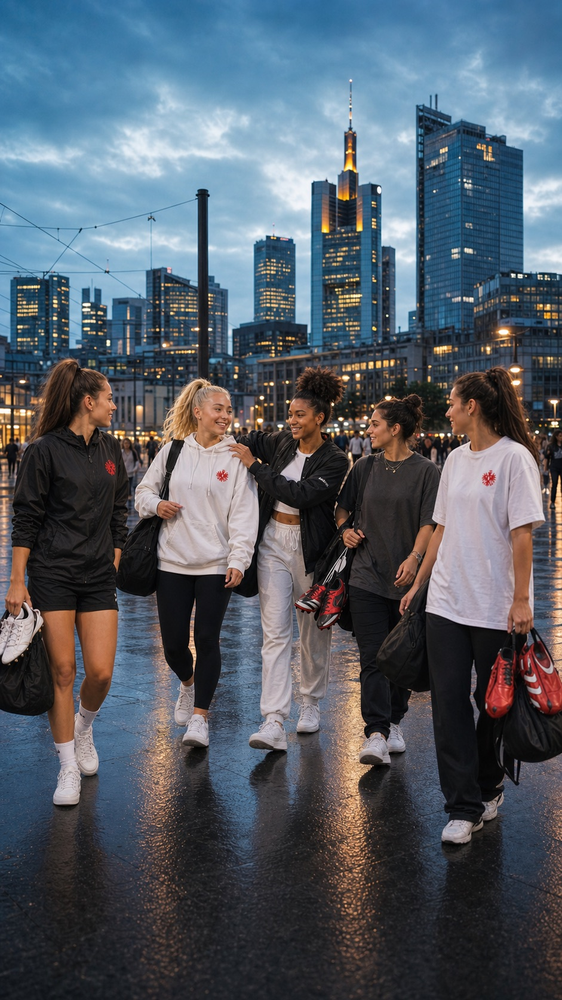

Für Journalist:innen
Presse.
Logos, Illustrationen und Bildmaterial zur freien Verwendung mit Quellenangabe. Für Rückfragen: post@lotte-specht.de

Kurzporträt
Lotte Specht e.V. in Kürze.
Lotte Specht e.V. wurde am 8. März 2020 in Frankfurt von weiblichen Fußballfans gegründet. Der Name knüpft an die Frankfurter Pionierin Lotte Specht an, die 1930 den 1. Deutschen Damen-Fußballclub mitgründete.
Der Verein bringt Sport, Fankultur und gesellschaftliches Engagement zusammen und macht Frauen im Fußball sichtbar — auf dem Platz, in der Kurve und mitten in Frankfurt.
Downloads
Logos.
Logos werden geladen …
Downloads